Author: Jungwoo Hong
This report presents a comprehensive analysis of 1,581 enriched ledger pages spanning 1700–1900, covering 53,901 individual transaction entries from an Oxford college. Each entry has been semantically annotated by a large language model with direction (income/expenditure), spending category, language, named entities (person, place), payment periodicity, and arrears status. An additional layer of TF-IDF embedding analysis provides vocabulary-level evidence for structural transitions over two centuries.
The central organising question is whether the ledger record can reveal traces of the First Industrial Revolution (c. 1760–1840) — and the deeper Victorian transformation that followed — in the financial behaviour, vocabulary, and institutional priorities of a historic Oxford college.
53,901 enriched entries 1700–1900 10 spending categories Inflation-adjusted (Phelps Brown-Hopkins)The enriched dataset consists of all digitised pages from an Oxford college ledger archive. The raw pages (handwritten, mixed Latin/English) were transcribed using a vision language model (Gemini Flash), then each entry row was passed to a second model pass for semantic enrichment. The enrichment pipeline assigned each entry a set of structured metadata fields that allow statistical analysis beyond raw amounts.
All years are grouped into three periods that bracket the First Industrial Revolution:
| Era | Years | Rationale | Entries (weighted) |
|---|---|---|---|
| pre_1760 | 1700–1759 | Pre-industrial baseline; agricultural economy, Latin-dominant records | ~10,872 |
| industrial_1760_1840 | 1760–1839 | Onset of industrialisation; rising financial complexity, price instability (Napoleonic wars) | ~15,768 |
| post_1840 | 1840–1900 | Victorian modernisation; railways, institutional reform, capital markets, Empire | ~11,530 |
| Field | Values | Description |
|---|---|---|
direction | income / expenditure | Whether the entry records money received or spent |
category | 10 types (see below) | Semantic type of the transaction |
language | latin / english / mixed | Language of the original description |
english_description | free text | LLM-normalised English translation for embedding analysis |
person_name | string or null | Named individual in the entry |
place_name | string or null | Named place or estate in the entry |
payment_period | annual / half_year / biennial / one_off / unclear | Frequency of the payment |
is_arrears | true / false | Whether the entry notes a debt carried from a prior period |
amount_real | decimal £ (1700 prices) | Nominal amount deflated by Phelps Brown-Hopkins price index |
| Category | Description |
|---|---|
land_rent | Rents received from agricultural holdings, rectories, and estates |
financial | Dividends, stock, benefactions, trust funds, and capital transactions |
administrative | Taxes, fees, insurance, and institutional running costs |
ecclesiastical | Payments to vicars, augmentations, and church-related income |
salary_stipend | Wages and stipends to staff, fellows, rectors, and scholars |
maintenance | Building repairs, paving, painting, and infrastructure works |
educational | Scholarships, exhibitions, school fees, and academic prizes |
domestic | Provisions, wine, candles, gas, and household consumption |
charitable | Alms, poor relief, infirmary subscriptions, and donations |
other | Miscellaneous entries, signatures, and unclear rows |
The enrichment pipeline transforms raw handwritten ledger page images into structured, machine-readable records through three consecutive stages: extraction, supervision, and semantic enrichment. Each stage is powered by a different large language model, and the design reflects hard-won lessons about where individual models fail on historical documents.
Each ledger page image is sent independently to two vision-language models: Gemini Flash and GPT-5-mini. Both models are given the same prompt asking them to transcribe every row on the page — including the description text, amount fields (pounds, shillings, pence, fraction), and row type (header, entry, or total). Running two independent extractors on every page creates a pair of candidate transcriptions for each row that can be compared and cross-checked.
Neither model is reliable enough to trust alone on this material. Gemini Flash handles visual layout ambiguity better (it is less likely to mis-associate an amount from a neighbouring row), while GPT-5-mini sometimes produces more accurate description text for abbreviated Latin. The dual-model approach exploits the complementary strengths of both systems.
A third call to Gemini Flash — in its role as supervisor — receives both candidate transcriptions side by side along with the original page image. Its task is to decide, for each row, which candidate is correct, or to produce a corrected version if both are wrong. The supervisor resolves disagreements by referring back to the image, making it functionally analogous to a human reviewer checking a transcription against the manuscript.
The supervisor records how it resolved each row in a structured notes field
that is stored in the output JSON. This gives a complete audit trail of every decision.
The confidence_score field on each row reflects the supervisor's certainty —
rows where both models agreed receive a score of 1.0; rows requiring visual override or
where both candidates were wrong receive lower scores. Resolution modes are tracked in a
_meta.supervisor_meta object per page:
| Resolution mode | Meaning | Example (page 1700_1) |
|---|---|---|
rows_by_consensus | Both models agreed; supervisor confirms | 1 row |
rows_by_note_assessment | Models disagreed; supervisor chose based on transcription quality assessment | 4 rows |
rows_by_visual_override | Both models wrong; supervisor corrected against image | 26 rows |
rows_added_missing | Row present in image but missed by both models | 0 rows |
rows_dropped_extra | Row hallucinated by a model but not in image | 0 rows |
The dominance of rows_by_visual_override in early pages (26 of 31 rows in the
example above) illustrates how challenging 1700-era ledger pages are — most rows require the
supervisor to actively correct both candidates rather than just selecting one.
Once a page has been fully arbitrated and a clean set of row transcriptions produced, each individual entry row (not headers or totals) is passed to GPT-5-mini acting as an enrichment model. This model receives the description text, the section header (which provides contextual framing), and the full page context, and is asked to assign structured semantic fields to the entry:
| Field | Type |
|---|---|
direction | income / expenditure |
category | one of 10 types |
language | latin / english / mixed |
english_description | free text translation |
english_description_with_amount | full translated sentence with amount |
| Field | Type |
|---|---|
place_name | string or null |
person_name | string or null |
payment_period | annual / half_year / biennial / one_off / unclear |
is_signature | boolean |
is_arrears | boolean |
The english_description is particularly important: it is a clean,
standardised English translation of the original (often Latin) description. This field
is what the embedding analysis operates on. By normalising away OCR noise, archaic
abbreviations, and Latin syntax before computing TF-IDF vectors, the embeddings reflect
the semantic content of the transactions rather than the surface-level accidents of
historical handwriting.
The following shows how a single row from page 1700_1 is transformed at each stage. The original description is a two-word Latin abbreviation. By the end of Stage 3 it has become a fully structured record with category, direction, named entity, translation, and payment metadata.
| Stage | What the system sees | What it produces |
|---|---|---|
| Raw image | Handwritten text: "Coquo" with ink marks in the amount columns | — |
| Gemini Flash (extraction) | Page image | description: "Cogno", amount: wrong |
| GPT-5-mini (extraction) | Page image | description: garbled, amount: wrong |
| Gemini Flash (supervisor) | Both candidates + image | description: "Coquo", amount: £1 10s 8d, confidence: 1.0, note: "visual override — both extractors had incorrect amounts" |
| GPT-5-mini (enrichment) | Arbitrated row + section header + context | direction: expenditure, category: salary_stipend, language: latin, english_description: "Payment to the cook.", person_name: "Cook", payment_period: unclear, is_arrears: false |
This three-stage pipeline was run over all 1,581 pages of the ledger archive, covering
every year from 1700 to 1900. The output is one JSON file per page, each containing
the full array of arbitrated and enriched row objects plus a _meta block
recording the models used and supervision statistics. The flat CSV
(all_enriched_entries.csv, 53,901 rows) is derived by concatenating all
entry-type rows from these JSON files, parsing amounts into decimal pounds, applying
year weights for pages that span partial years, and joining the Phelps Brown-Hopkins
price index for inflation adjustment.
The most dramatic story in the dataset is the radical recomposition of the college's financial portfolio across the three eras. The data reveal a shift from a land-based institution toward one increasingly dependent on financial capital — a transition that tracks the broader economic transformation of England during industrialisation.
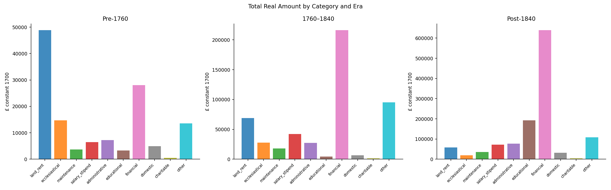
Figure 1. Total real amounts (£, 1700 prices) per spending category, grouped by era. The dramatic post-1840 expansion is dominated by financial and educational categories.
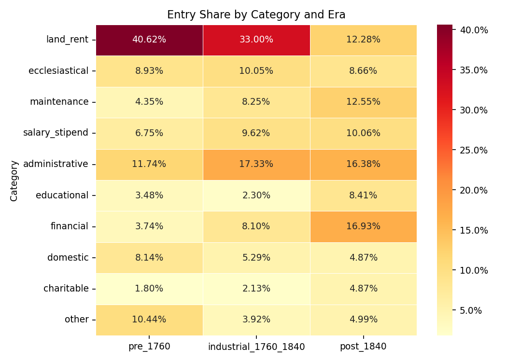
Figure 2. Heatmap of each category's share of total entries per era. Darker = higher share.
| Category | pre_1760 (%) | industrial_1760_1840 (%) | post_1840 (%) | Trend |
|---|---|---|---|---|
| financial | 21.6 | 43.3 | 51.7 | ⬆ Strongly rising — capital market growth |
| land_rent | 36.9 | 13.1 | 4.7 | ⬇ Strongly falling — relative decline of land income |
| educational | 2.4 | 0.8 | 15.3 | ⬆ Post-1840 surge — Victorian scholarship reform |
| ecclesiastical | 11.1 | 5.3 | 1.5 | ⬇ Declining — secularisation of finance |
| salary_stipend | 4.9 | 8.6 | 5.7 | Peak in industrial era |
| administrative | 5.5 | 5.3 | 6.3 | ≈ Stable, slight post-1840 rise |
| maintenance | 2.8 | 3.5 | 2.9 | ≈ Broadly stable |
| domestic | 3.8 | 1.2 | 2.6 | Falls in industrial era, partial recovery |
| charitable | 0.4 | 0.2 | 0.4 | ≈ Marginal but structurally different (see §9) |
| other | 10.6 | 18.7 | 8.8 | Industrial-era noise spike; stabilises post-1840 |
land_rent and
financial as the dominant income source is one of the clearest signatures of
industrialisation in this dataset. Pre-1760 land rents account for 36.9% of amounts;
by post-1840 they fall to 4.7%, while financial instruments rise from 21.6% to 51.7%.
This is not merely relative dilution — financial real amounts grow by roughly 23× while
land rent real amounts grow only 1.2×.
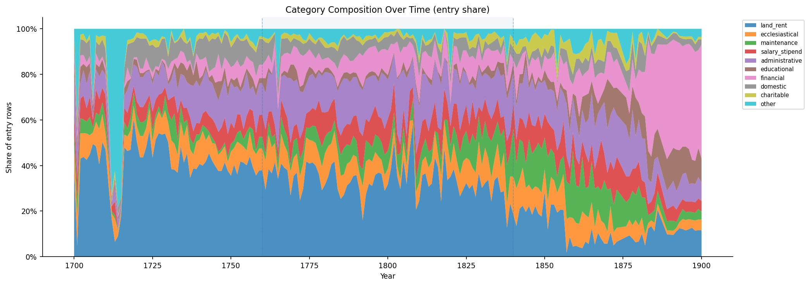
Figure 3. Year-by-year real amounts per category (1700–1900). Each panel shows one category's trajectory, revealing when changes occurred.
The direction field distinguishes income entries (money received) from expenditure entries (money paid out). Tracking the ratio between these over time gives a proxy for the college's net financial position and the relative growth of different sides of its ledger.
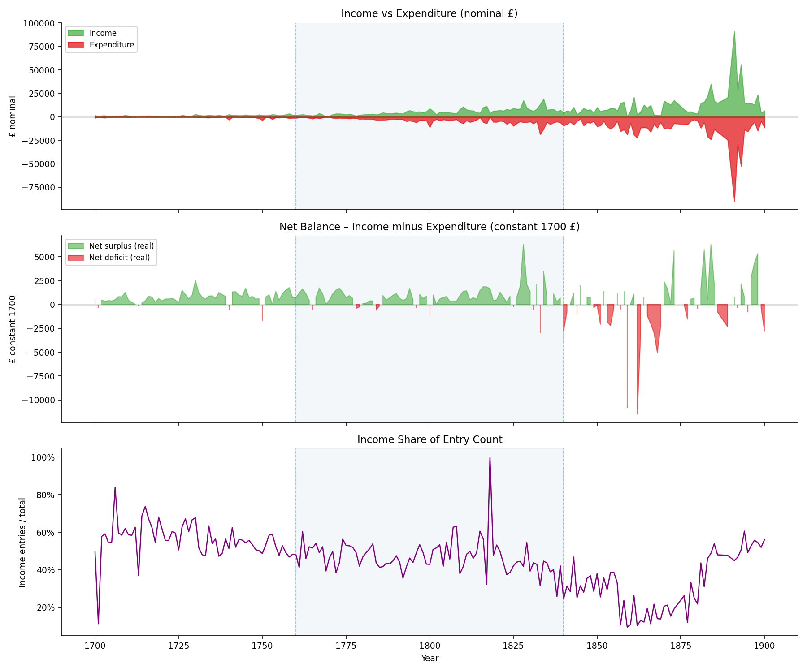
Figure 4. Stacked area or line chart showing real income and expenditure totals per year (1700–1900).
| Category | Primary direction | Note |
|---|---|---|
| land_rent | Income (99%) | Almost entirely rental receipts from estates |
| financial | Income (82%) | Dividends and benefactions received |
| ecclesiastical | Both (roughly equal) | College both receives tithes and pays augmentations |
| maintenance | Expenditure (99%) | Payments to tradesmen and workers |
| administrative | Expenditure (92%) | Taxes and institutional costs |
| charitable | Expenditure (98%) | Alms and poor relief paid out |
| salary_stipend | Expenditure (99%) | Wages paid to staff and fellows |
| educational | Income (54%) | Fine-based income slightly outweighs scholarship payments pre-1760 |
educational was
marginally an income category — the college collected fines and fees. By post-1840,
educational entries are predominantly expenditure as the college began awarding
scholarships, exhibitions, and bursaries at scale. This reversal maps onto the Victorian
shift from fee-collection to merit-based funding.
The language field records whether each entry's original description was written in Latin, English, or a mixture of both. Tracking this over time reveals when the institution transitioned from classical Latin record-keeping to vernacular English — a shift with implications for administrative modernisation, literacy, and institutional culture.
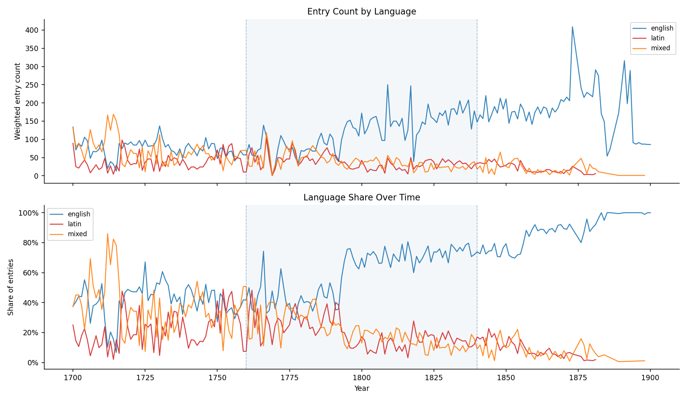
Figure 5. Share of entries in Latin, English, and mixed language per year (1700–1900). The transition from Latin to English is one of the clearest regime changes in the dataset.
An arrears entry records a payment that was due in a prior period but has not yet been received — a form of credit risk in the college's income streams. Arrears are predominantly associated with land rent income: tenants who could not pay on time would accumulate unpaid balances carried into subsequent accounts. Tracking the arrears rate over time provides a rough proxy for tenant financial stress and rural economic conditions.
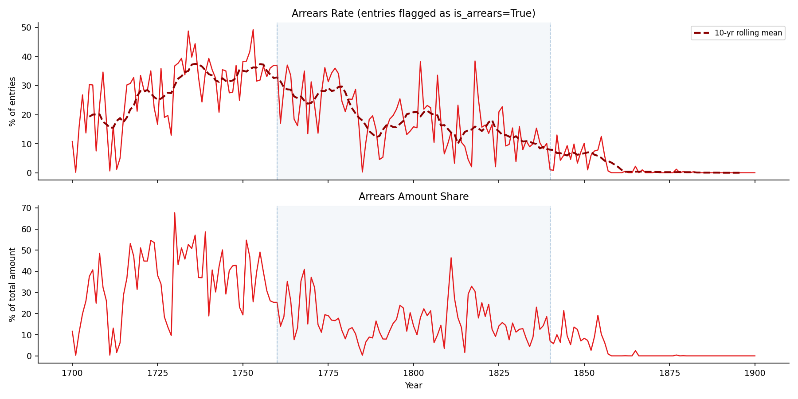
Figure 6. Annual arrears rate (proportion of entries flagged as arrears) and arrears amount share, 1700–1900. Spikes correspond to known periods of agricultural distress.
is_arrears = true. Entries that reference
"arrears of rent," "balance due," or similar phrases are flagged. Some ambiguity exists
for entries that state a partial payment without explicit arrears language — these are
likely under-counted.
The payment_period field records how frequently a given payment was made — whether
it was an annual rent, a half-yearly stipend, a biennial fee, or a one-off transaction.
Changes in payment periodicity reflect the evolution of contracting norms and financial
administration over time.
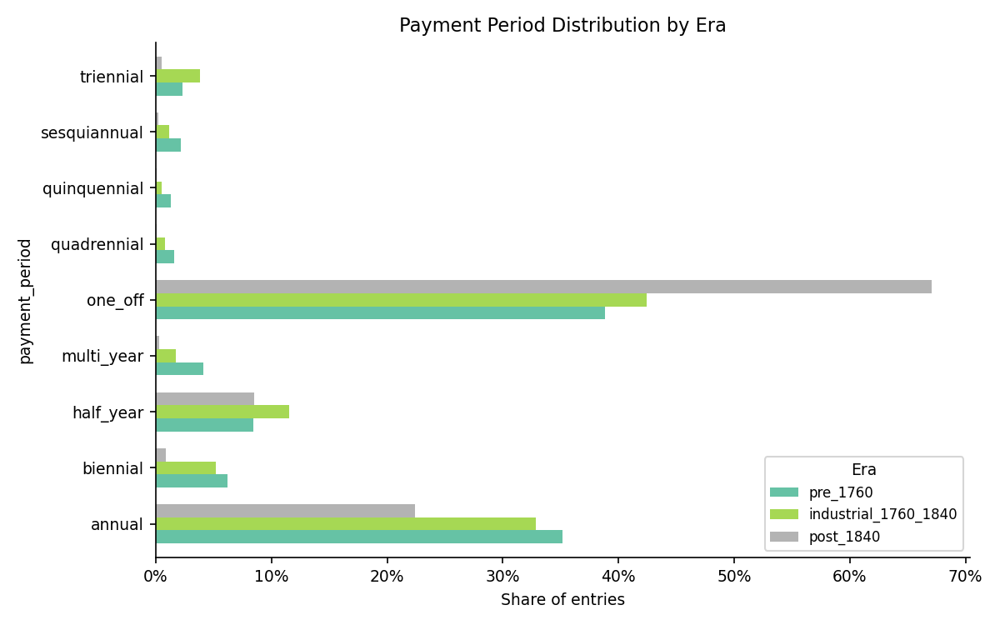
Figure 7. Distribution of payment periods (annual, half-yearly, biennial, one-off, unclear) per era. The shift away from ambiguous ("unclear") periods toward more explicitly structured ones tracks administrative formalisation.
The enrichment model extracted person names and place names from each entry. These can serve as a social history lens: which individuals appear in which eras, which estates and localities appear in the accounts, and how the geographic reach of the college's financial relationships changed over time.
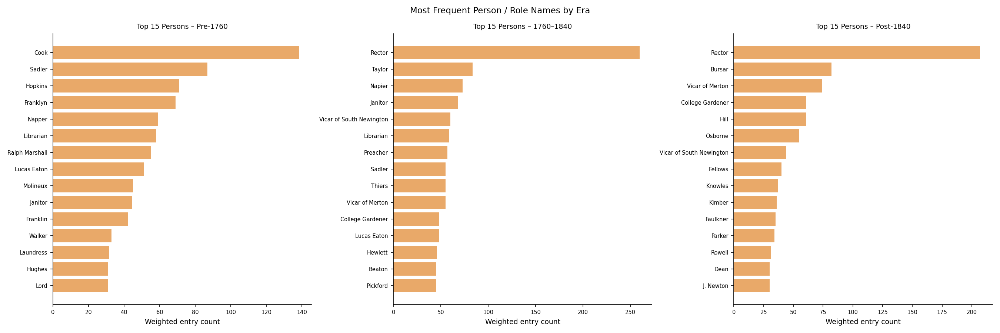
Figure 8a. Top person names by entry count per era.
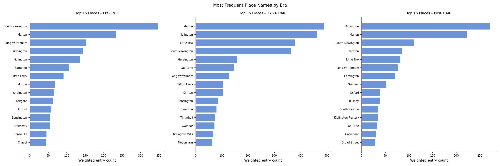
Figure 8b. Top place names by entry count per era.
Change-point detection applies a robust z-score (using median absolute deviation, resistant to long-run trends) to year-on-year first differences across multiple enriched metrics. This identifies years where the data signal changed abruptly, suggesting institutional shocks, accounting reforms, or external economic events.
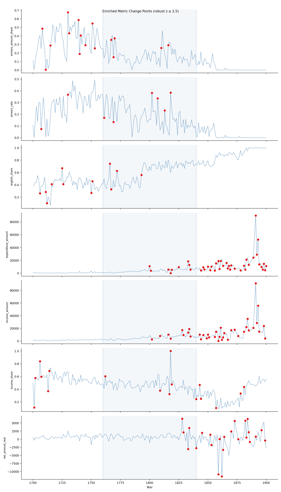
Figure 9. Flagged structural break years across multiple enriched metrics (direction balance, category shares, arrears rate, language share). Vertical lines mark statistically anomalous year-on-year jumps.
Beyond counting and summing, we applied TF-IDF vectorisation to the LLM-normalised
english_description field of every entry, followed by truncated SVD
dimensionality reduction and K-means clustering. This produces a vocabulary-level view
of institutional change — revealing not just how much was spent but what
language was used to describe it and how that language evolved.
All embedding analyses were run on the cleaned, LLM-translated descriptions rather than raw OCR text, removing the noise from handwriting recognition errors and reducing Latin-script contamination.
K-means clustering (k = 10, matching the number of labelled categories) was applied to entry-level TF-IDF vectors. The resulting clusters were then compared against the enrichment-assigned category labels to measure cluster purity — how well the unsupervised semantic groups recover the labelled categories.
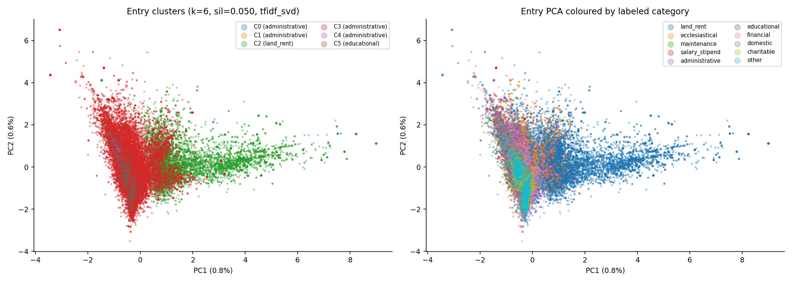
Figure 10a. PCA projection of entry-level TF-IDF vectors, coloured by K-means cluster assignment. Cluster separation indicates distinct semantic regions in the vocabulary space.
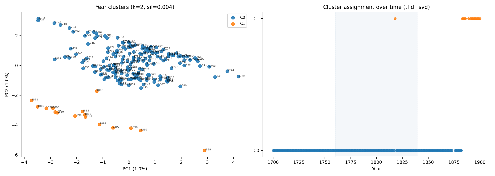
Figure 10b. Year-level cluster assignments over time. Colour transitions indicate when the dominant transaction vocabulary shifted between regimes.
| Cluster | Size | Dominant Category | Latin % | Income % | Note |
|---|---|---|---|---|---|
| 0 | 226 | administrative | 94% | 0% | Latin expenditure-only cluster — early formal payments |
| 1 | 436 | administrative | 0.2% | 12% | English expenditure cluster — modern administrative outgoings |
| 2 | 10,734 | land_rent | 11% | 84% | Largest income cluster — rental receipts |
| 3 | 40,450 | administrative | 18% | 31% | General mixed-use cluster — catches diverse entries |
| 4 | 181 | administrative | 70% | 1% | Small high-Latin expenditure cluster — early formal outgoings |
| 5 | 870 | educational | 4% | 18% | Educational expenditure cluster |
Table shows clusters with >100 entries. Cluster 3 is the dominant general-purpose cluster, indicating that a large proportion of entries are semantically similar at the TF-IDF level despite having diverse labelled categories.
For each year, we aggregate the TF-IDF vectors of all its entries into a single year-level document vector, then compute the pairwise cosine similarity between all 196 year-vectors. This gives a direct measure of how semantically similar any two years are in terms of the vocabulary used in their ledger entries.
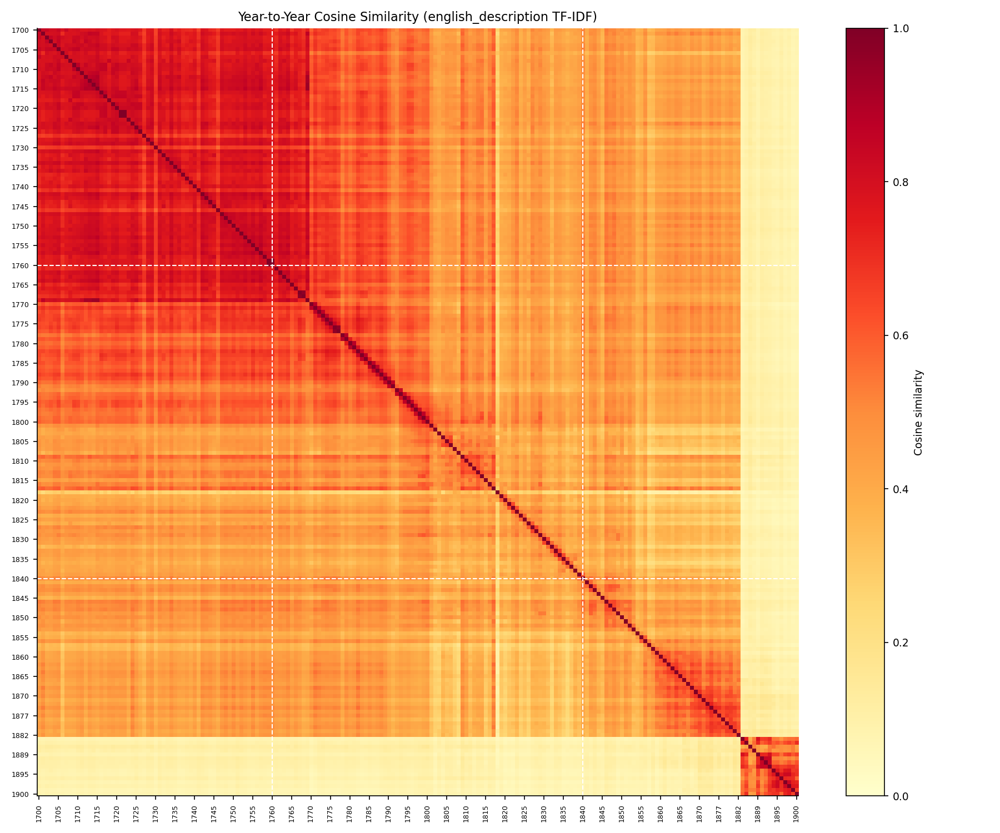
Figure 11a. 196 × 196 heatmap of year-level cosine similarity. Bright blocks indicate eras of similar vocabulary; dark transitions indicate semantic breaks.
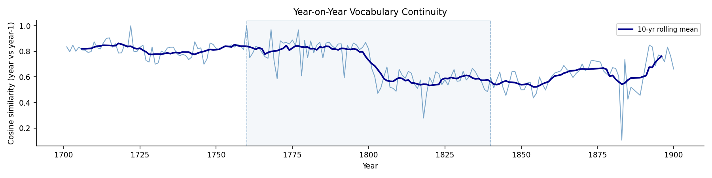
Figure 11b. Year-on-year semantic continuity (cosine similarity between each year and the previous year). Drops indicate years where the ledger vocabulary changed sharply from the prior year.
| Year | Top 3 nearest years | Mean similarity | Interpretation |
|---|---|---|---|
| 1700 | 1702, 1707, 1705 | 0.84 | Consistent early-era vocabulary |
| 1701 | 1769, 1713, 1714 | 0.86 | Unusual cross-era match — shared vocabulary patterns |
| 1760 | Years in 1750s–1770s | ~0.83 | Transition zone: straddles two eras semantically |
| 1840 | Years in 1830s–1850s | ~0.82 | Gradual rather than abrupt vocabulary shift at era boundary |
Category cohesion measures how consistent the vocabulary of a given category is across all decades — i.e., how stable its semantic identity is. High cohesion means the category is described in consistent terms across 200 years. Low cohesion means the vocabulary evolved substantially, possibly reflecting changing institutional meanings of the category.
Decade-level drift tracks the cosine similarity between adjacent decades within each category, identifying when vocabulary changed most sharply.
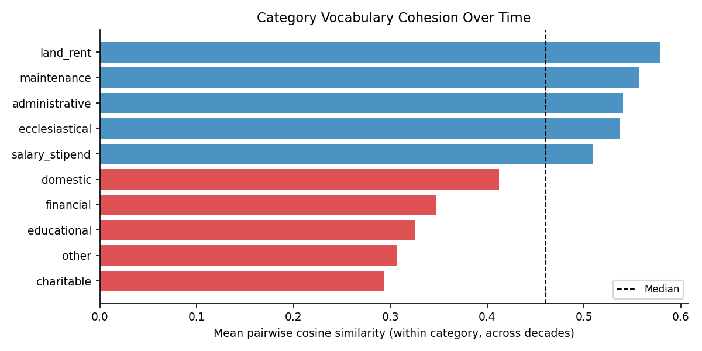
Figure 12a. Mean pairwise cosine similarity within each category across all decades. Higher = more semantically stable category over 200 years.
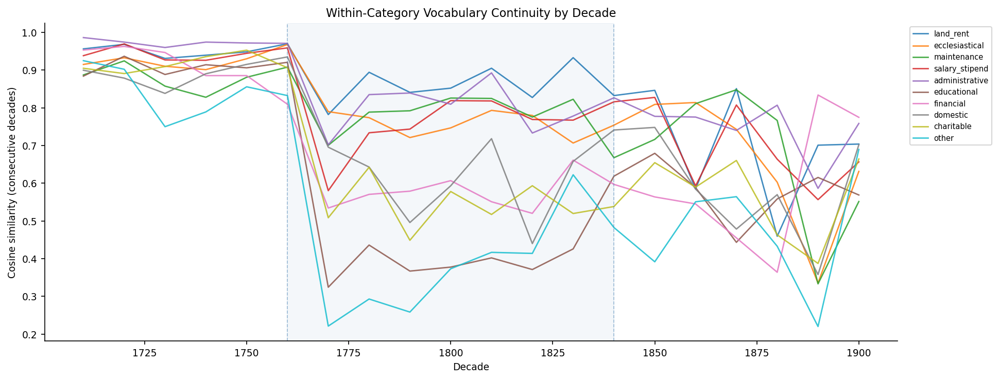
Figure 12b. Decade-to-decade cosine similarity within each category. Drops indicate decades when that category's vocabulary changed sharply.
| Category | Mean cohesion | Interpretation |
|---|---|---|
| land_rent | 0.579 | Most stable — "rent," "annual," "received" persists unchanged for 200 years |
| maintenance | 0.557 | Consistent trade vocabulary: "work," "repairs," "payment" |
| administrative | 0.540 | Stable institutional costs, though new terms appear post-1840 |
| ecclesiastical | 0.537 | Church vocabulary largely fixed; "vicar," "augmentation" persist |
| salary_stipend | 0.509 | Fairly stable; new role types emerge post-1840 |
| domestic | 0.412 | Technology-sensitive — "candles" replaced by "gas" |
| financial | 0.347 | Volatile — vocabulary transforms from "benefaction/chest" to "fund/trust/dividend" |
| educational | 0.326 | Near-reinvention post-1840 as scholarship framework changes |
| charitable | 0.293 | Most volatile — charity practice transformed entirely (see §9e) |
financial (new capital instruments), educational (Victorian reform),
and charitable (institutionalisation of poverty relief). Categories rooted in
medieval institutional life — land_rent, maintenance,
ecclesiastical — remain semantically stable throughout.
Log-odds TF-IDF analysis contrasts the vocabulary that most strongly distinguishes income entries from expenditure entries. Terms with high positive log-odds are strongly associated with income; high negative scores indicate expenditure-specific vocabulary.
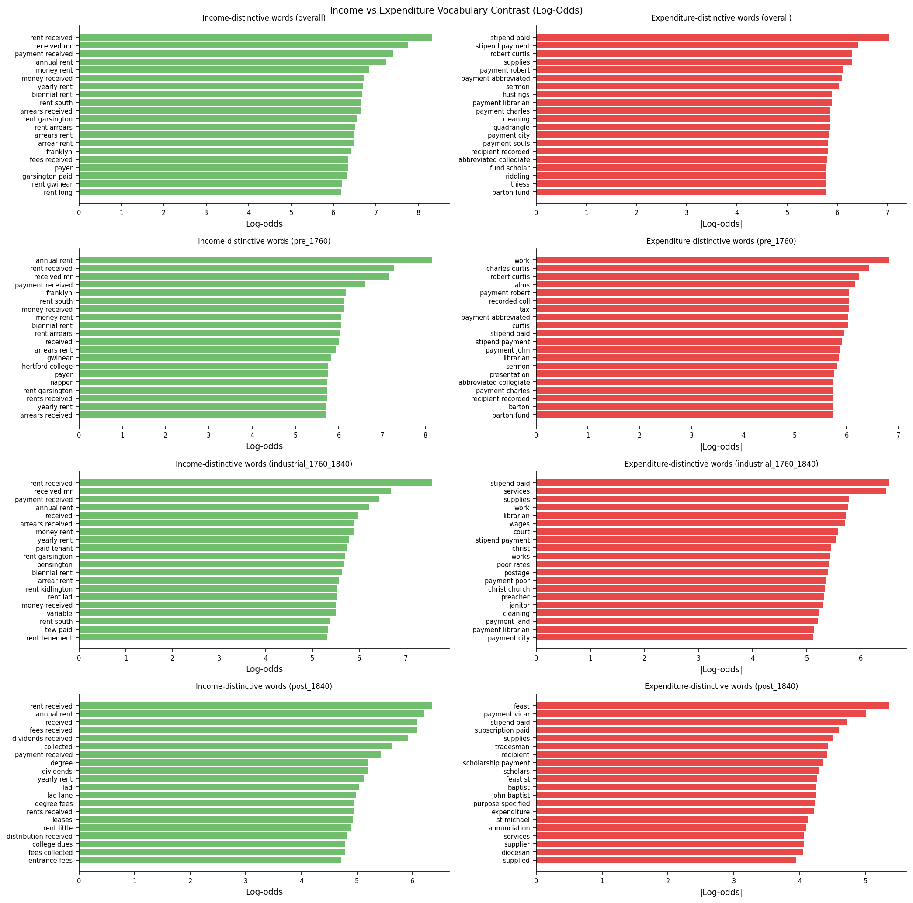
Figure 13. Log-odds TF-IDF contrast between income and expenditure entries. Bars extending right indicate income-distinguishing vocabulary; bars extending left indicate expenditure-specific vocabulary.
The most informative view of vocabulary evolution comes from examining the top TF-IDF terms for each category within each era. This reveals not just that a category grew or shrank, but what the college was actually recording when it used a given category in each period.
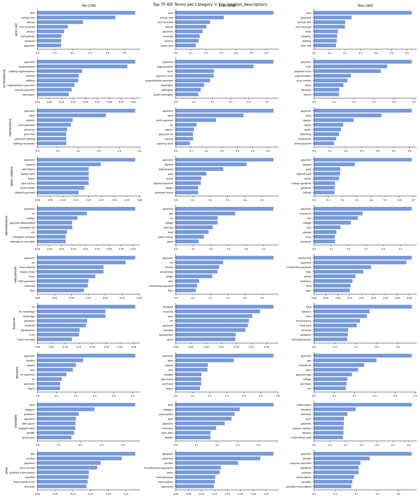
Figure 14. Heatmap of top TF-IDF terms for each category × era combination. Term weight corresponds to colour intensity.
| Category | pre_1760 key terms | industrial_1760_1840 key terms | post_1840 key terms | Significance |
|---|---|---|---|---|
| domestic | candles, capons, corn, mr lawrence | candles, capons, corn, wine | gas, household, wine, inn | Appearance of "gas" post-1840 is a direct signal of gas lighting infrastructure — a product of the industrial revolution |
| administrative | coll, plate money, recorded | land tax, plate money | insurance, stamps, rate, premium | Post-1840 administrative vocabulary reflects the Victorian fiscal state: insurance products, stamp duties, and new local government rates |
| financial | mr morbridge, benefaction, chest recorded | dividend, stock, benefaction, receipts | fund, trust, balance, fund distribution, exhibition | Progressive formalisation of financial instruments: from individual benefactions → stock dividends → institutional trust funds |
| charitable | alms, beggars, prisoners, given poor | alms, beggars, subscription, poor alms, infirmary | subscription, donation, infirmary, widows orphans, orphans | Charity transforms from direct personal alms-giving to institutional subscriptions — classic Victorian professionalisation of welfare |
| educational | fines, respect fines, little payment, collected | scholar, scholarship, books, fees, fine | scholarship, fees, school, exhibition, fund, open | "Open" (open competitions) and "exhibition" (competitive awards) reflect Victorian university reform and the move to meritocratic selection |
| salary_stipend | john thiess, barton fund, stipend | stipend, rector, wages | college gardener, gardener, stipend, rector | Appearance of "gardener" as a distinct salary category post-1840 suggests growth of non-academic domestic staff |
| land_rent | arrears, michaelmas, annual rent | annual rent, rectory, years rent | property, relating, rents (plural) | Shift from individual tenancy ("annual rent") language toward legal/property terminology reflects professionalised estate management |
This section synthesises the key empirical findings from the enriched analysis into a coherent narrative. The results are organised into four themes that together address the central question of whether this ledger record shows traces of the First Industrial Revolution and the Victorian transformation that followed it.
The most quantitatively robust result in the dataset is the near-complete reversal of the college's income structure over two centuries. In the pre-industrial period (1700–1759), land rent dominated — accounting for 36.9% of all real income, with financial instruments contributing 21.6%. By the post-1840 period this had inverted: financial income rose to 51.7% of the total while land rent shrank to just 4.7%.
In absolute real terms, the crossover is even more striking. Financial real amounts grew approximately 23× from the pre-1760 era to post-1840, while land rent real amounts grew only 1.2× over the same span. The crossover is not a story of land shrinking — it is a story of financial instruments expanding far faster. The vocabulary shift within the financial category mirrors this: early benefactions and individual "chest recorded" entries give way to dividends and stock receipts in the industrial era, then to institutionalised trust funds and fund distributions post-1840. This is a direct reflection of the English capital market maturing through the industrial period.
| Category | pre_1760 real amount share | post_1840 real amount share | Absolute real change |
|---|---|---|---|
| financial | 21.6% | 51.7% | +23× |
| land_rent | 36.9% | 4.7% | +1.2× |
| educational | 2.4% | 15.3% | +59× |
| ecclesiastical | 11.1% | 1.5% | +1.3× |
| salary_stipend | 4.9% | 5.7% | +11× |
The second clearest result concerns education — a category that underwent not just growth but a directional reversal. In the pre-1760 period, educational entries were predominantly income: the college collected fines and fees and its dominant educational vocabulary reflects this ("fines," "collected," "respect fines"). By the post-1840 period, educational entries became predominantly expenditure as the college began funding scholarships, exhibitions, and bursaries at scale. The category's vocabulary completely transformed ("scholarship," "open," "exhibition," "fund").
The category has the second-lowest vocabulary cohesion score (0.326), meaning its language is the second most volatile of all ten categories — near-reinvention between eras rather than gradual evolution. In absolute real terms, educational spending grew approximately 59× from the pre-1760 to post-1840 era, making it the fastest-growing category in the dataset despite starting from a negligible base. This maps precisely onto the timing of Oxford University reform legislation (late 1840s–1860s) and the introduction of open competitive examinations.
Several vocabulary-level findings provide direct, dated connections between national developments and the college's institutional accounts:
The charitable category shows the most volatile vocabulary cohesion of all ten categories (mean 0.293), reflecting a genuine transformation in the college's approach to poor relief. Pre-1760 charitable entries are direct and personal: "alms to beggars," "prisoners in Bocardo," "alms given to poor." By post-1840 the vocabulary has become institutional: "subscription," "donation," "infirmary," "widows and orphans fund." The college shifted from giving alms directly to individuals to paying subscriptions to intermediary charitable organisations — the classic Victorian professionalisation of welfare following the 1834 Poor Law Amendment and the growth of voluntary hospital and charity organisations.
The arrears rate analysis shows a related picture: arrears (tenant non-payment) are highest in the early 18th century and in the agricultural depression periods (post-Napoleonic wars), and decline from the mid-19th century as the portfolio shifts toward financial instruments that carry no equivalent credit risk. This is consistent with the hypothesis that portfolio diversification was partly a rational institutional response to the volatility of land-based income.
The embedding analysis provides structural confirmation for the three-era framework used throughout the analysis. Year-level cosine similarity heatmaps show clear block structure: years within each era (pre_1760, industrial_1760_1840, post_1840) are significantly more similar to each other than to years in other eras. The transition zones around 1760 and 1840 are gradual rather than step changes, consistent with the slow pace of institutional adaptation to external economic shifts.
Vocabulary cohesion analysis confirms that the categories most embedded in medieval institutional life — land_rent (0.579), maintenance (0.557), ecclesiastical (0.537) — show the most stable vocabulary over 200 years, while those most sensitive to external change — charitable (0.293), educational (0.326), financial (0.347) — are the most volatile. This structural finding supports the use of TF-IDF vocabulary analysis as a complementary lens to financial amounts for dating institutional transitions.
Data pipeline:
Raw page images → Gemini Flash OCR → enrichment pass (direction, category, language, entities) →
analysis_enriched.py (statistical summaries) →
embedding_analysis_enriched.py (TF-IDF + K-means + cosine similarity) →
this report.
Price deflation: Phelps Brown & Hopkins (1956) index, 1700 = 100, linearly interpolated.
Double-entry correction: Pages with side = "left"/"right" (post-1880)
weighted at 0.5 to avoid double-counting income and expenditure on the same physical page.
Generated: March 31, 2026.